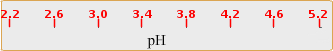

×
गाइड
- निम्नलिखित समाधान तैयार करें: (i) 0.5 ग्राम / एल मिथाइल नारंगी समाधान 100 एमएल डिस्टिल्ड पानी में 0.05 ग्राम मिथाइल नारंगी भंग करके; (ii) एक 0.2 एम डिसोडियम हाइड्रोजन ऑर्थोफोस्फेट (Na)2HPO4) 5.68 ग्राम Na को भंग करके समाधान2HPO4200 एमएल आसुत जल में; और (iii) 500 एमएल डिस्टिल्ड वॉटर में 9.61 ग्राम साइट्रिक एसिड को भंग करके 0.1 एम साइट्रिक एसिड समाधान।
- ना के अलग-अलग मात्रा को मिलाकर आठ बफर समाधान तैयार करें2HPO4समाधान और साइट्रिक एसिड समाधान जैसा कि तालिका 1 में दिया गया है।
- प्रत्येक बफर समाधान को 25 एमएल मात्रा के दो समान भागों में विभाजित करें।
- प्रत्येक बफर समाधान के एक 25 एमएल हिस्से में मिथाइल नारंगी समाधान के 0.5 एमएल जोड़ें। मिथाइल ऑरेंज इंडिकेटर वाले बफर सॉल्यूशन के एब्सॉर्बेंस माप को बफर के अन्य भागों के खिलाफ रेफरेंस या सैंपल ब्लैंक के रूप में किया जाना है। ये नमूना समाधान चयन पैमाने पर दिखाए जाते हैं।
- कंप्यूटर और साधन शक्तियों पर स्विच करें; साधन के 'वार्म-अप' के लिए 30 मिनट तक प्रतीक्षा करें।
- साधन में एक प्रकाश स्रोतों (यूवी और दृश्य) का चयन कर सकते हैं, भट्ठा चौड़ाई, गति स्कैन और% संचरण या अवशोषण प्रदर्शन, ब्याज की तरंग दैर्ध्य रेंज, आदि का चयन
- एक दिए गए पथ की लंबाई (कहते हैं, 1 सेमी) के साथ एक साफ और सूखी या ठीक से rinsedquartz क्युवेट लें।
- नमूना रिक्त (शुद्ध बफर समाधान) के साथ एक क्युवेट भरें और इसी बफर समाधान के साथ अन्य क्युवेट मिथाइल नारंगी समाधान युक्त।
- संदर्भ धारक में नमूना रिक्त रखें और नमूना धारक में नमूना।
- प्रत्येक नमूना के लिए स्कैन (ए बनाम λ) चलाएं 300 से 650 एनएम तक तरंग दैर्ध्य रेंज।
- अब अधिकतम अवशोषण (λ) के तरंग दैर्ध्य का पता लगाएंअधिकतम), इसी अवशोषण, पर अवशोषणINH+एलअधिकतमसभी pH मानों के लिए और इन डेटा (तालिका 2) वाली तालिका बनाएं।
- Λ पर चर्चा कैसे करेंअधिकतमऔर इसी अवशोषण समाधान के पीएच के साथ बदलती हैं।
- गणना करें पी.के.एप्रत्येक पीएच मान के लिए। औसत पीके का पता लगाएंए।
- प्लॉट पीएच बनाम लॉग ([In] / [InH)+])। पीके निर्धारित करेंएपीएच अक्ष के साथ लाइन के चौराहे से।
- तुलनात्मक रूप से निर्धारित pK की तुलना करेंएमूल्य की गणना औसत पीके के साथएमूल्य।
- एसिड पृथक्करण स्थिरांक, K निर्धारित करेंएमिथाइल ऑरेंज के लिए।
